Customer Studio Setup
I managed to setup the following three tables in the customer studio, under the shared workspace:

Schema & Tables
- public.warby_demo_users // Parent model of users table
- public.completed_orders // Modeled as an Event, associated with users
- public.abandoned_carts // Modeled as an Event, associated with users
Modeling Decisions
After making the parent model, I decided to create two event models for both 'Completed Orders' and 'Abandoned Cart'.
I chose event modelling because after reviewing the two options:
Related Model — links additional user properties or attributes back to the parent model.
Event Model — tracks actions a user has taken over time, each with a timestamp.
Event Model fits the situation better since both Completed Orders and Abandoned Carts have timestamped user actions, and the audience filtering in Part 2 relies on event occurrence.
Assumptions/Findings
On my first attempt, when creating the parent model, I used the 'Table Selector' available via the UI, however the data returned wasn't formatted in a usable way.
I came across the following errors when trying to create the 'Completed Order' and 'Abandoned Cart' event models:
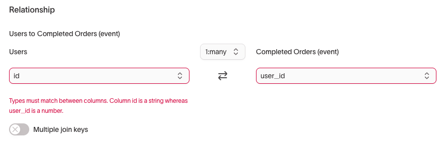
 I repeated the same process for the event models as well.
I repeated the same process for the event models as well.
Audience Creation
Audience 1 — Lifetime Value > $300
Users with a lifetime value greater than $300.
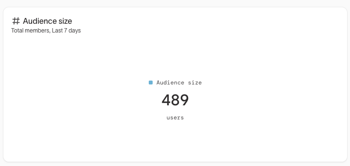
Audience 2 — Abandoned Cart with Turquoise Frame
Users who abandoned a cart containing a Turquoise frame.
Audience 3 — LTV + 2021 Timestamp
- Lifetime value greater than $250
- Completed order event before August 1, 2021
- Abandoned cart event after August 1, 2021
- Did not complete an order after August 1, 2021
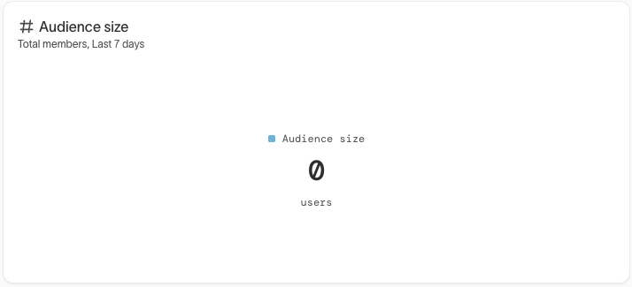
Audience 4 — Female, Japanese, Repeat Abandoners / No Orders Completed
- Identifies as female
- Born after October 1, 1991
- From Japan
- Abandoned cart at least two times
- Never completed an order
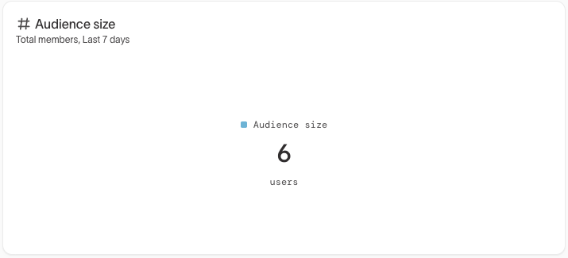
Assumptions/Findings
Once reading through the traits documentation and viewing
the customer studio overview video, I realised the best way to action LTV in an audience was to create a trait.

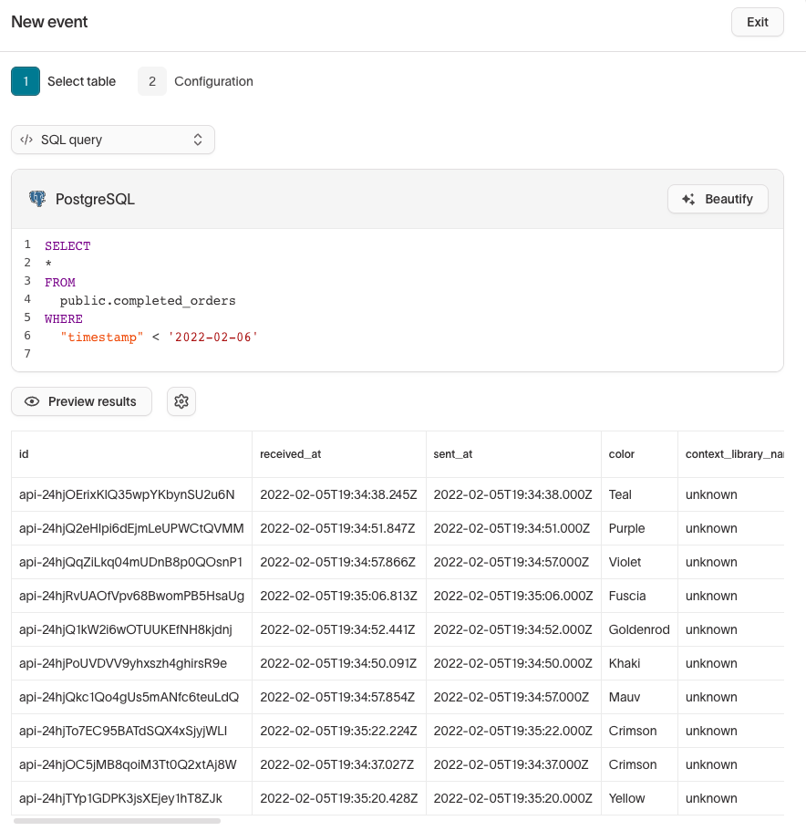
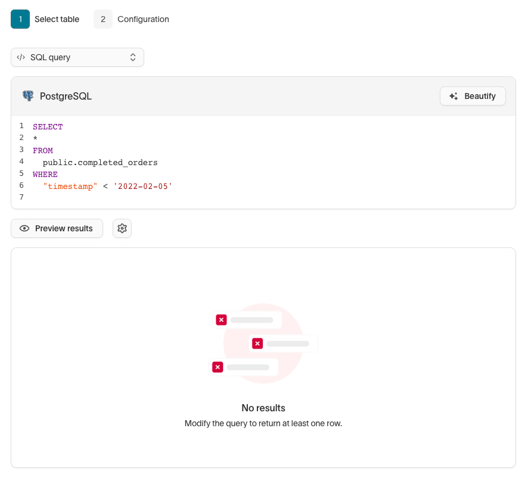
Once confirming filter 2 on audience 3 would spin up 0, due to the dataset's limited timeframe, I proceeded with the rest of the filtering.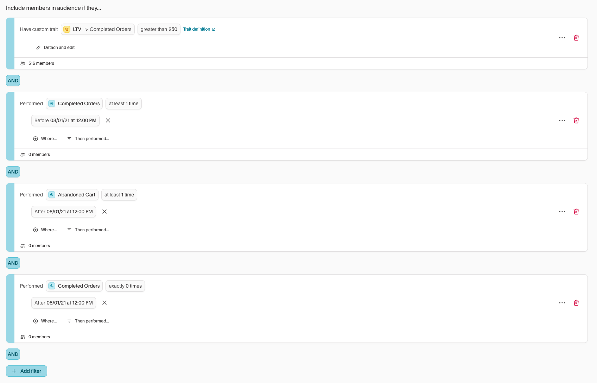
Reasoning & Expectations
Google Ads Sync Type
If one or more audiences were synced to Google Ads, what sync type would you expect the customer to use, and why?
Answer:
From my understanding, the supported sync types for Google Ads are Customer Match User List, Click Conversions, Click Conversion Adjustments, Call Conversions, and Offline Store Conversions. Since the use case here is syncing audiences like the ones I built in customer studio, the only sync type that applies is Customer Match User List. The others are all for conversion tracking purposes, not audience activation.
The docs also mention it can take 6 to 48 hours for a list to be populated after Hightouch sends the data to Google.Available User Identifiers for Google
Which user identifiers would be available within the Customer Studio schema to sync downstream to Google?
Answer:
The Google Ads Customer Match sync supports identifiers including;
Within the dataset, the available identifiers are email, first name, last name, and country.
Just like segment currently, for many of our destinations, Hightouch automatically normalises and hashes PII fields like email and name before sending to Google, so no manual hashing is required.
Sync Creation — Poplar HTTP Integration
Integration Overview
As the task states, I went over to the poplar site and created a free account and obtained the API keys:
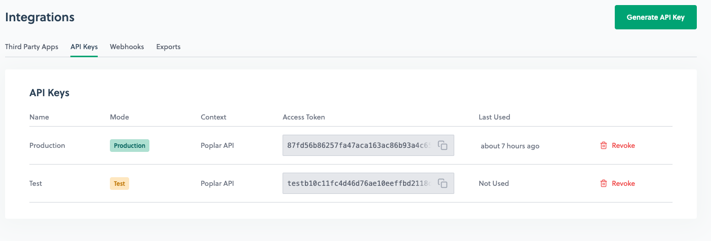 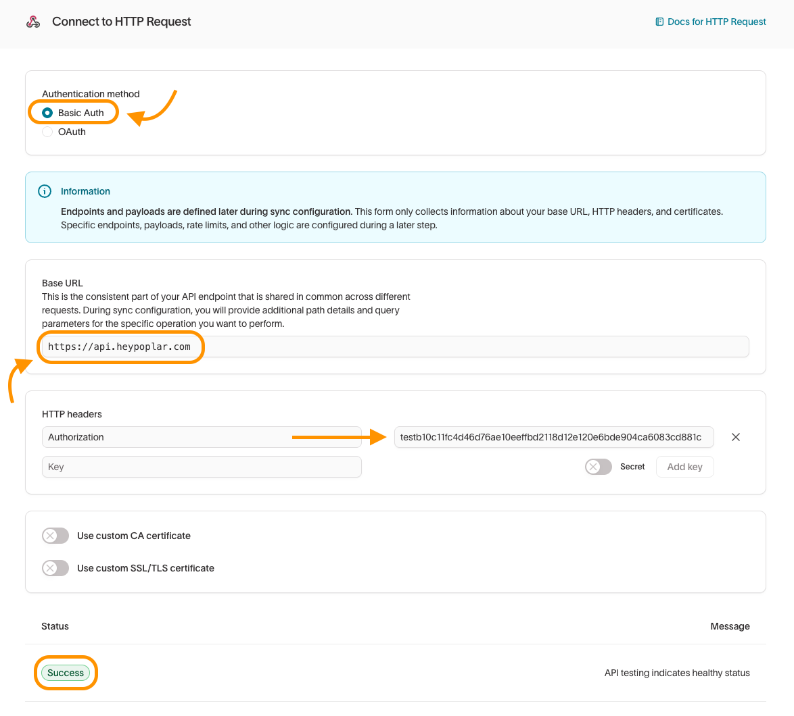
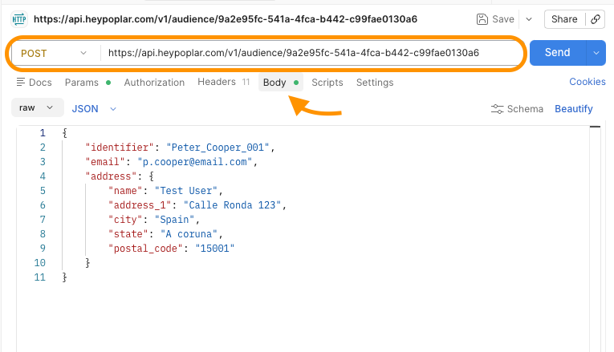
This was successful! Indicated by the 201 response. This was also reflected in my poplar audience instance.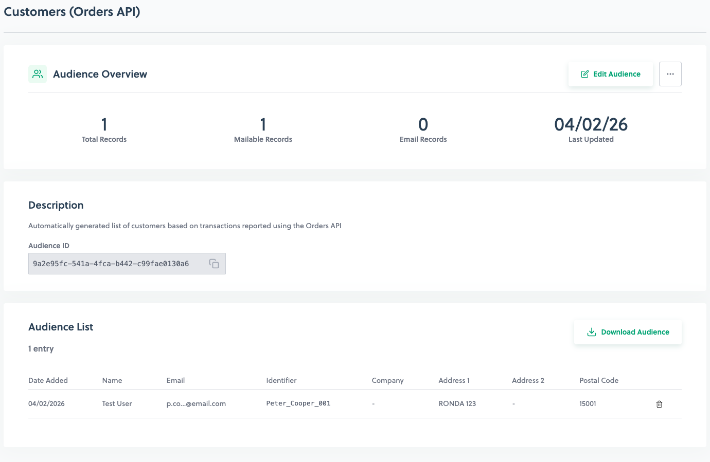
Now that I have established the connection between my HTTP request destination and my Poplar audience instance. I went ahead and started to complete the sync for audience 2 that I created in the previous section.
Below is a diagram of the flow from my understanding and screenshots to accompany it.
55 members
Poplar destination
Config Choices:
Rows added only. The task requires adding new users, not update/delete
Single row. Poplar API accepts 1 user per POST, not an array
I chose retry immediately for better feedback.
Backfill all rows. Send all 55 users on first run, not just new ones
Endpoint Used:
https://api.heypoplar.com/v1/audience/9a2e95fc-541a-4fca-b442-c99fae0130a6
identifier → User ID · email → Email
Only Poplar-supported fields · no address data in demo dataset
Sync Configuration Screenshots
Once the config was completed, I ran the sync and eventually got it working. Both rows and users were reflected in Poplar.
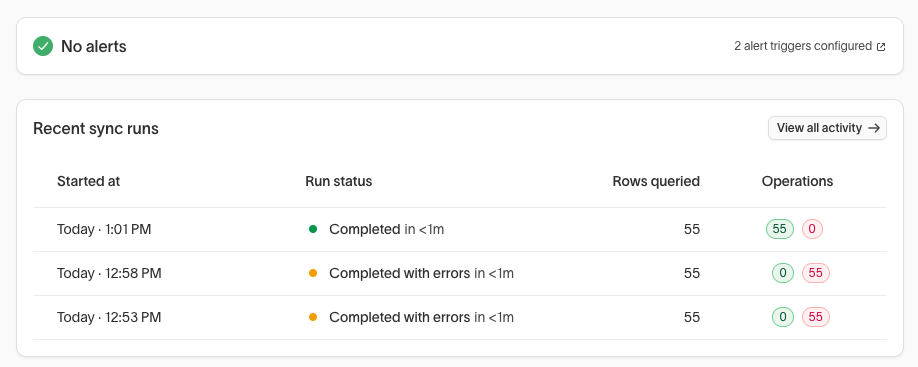

Assumptions/Findings:
I had two errors to fix on my first two attempts to complete the sync correctly. The first was to adjust the the HTTP headers. Originally I used the test API key from poplar without placing the word 'Bearer' in front of it.
This caused an error that was reported on the first sync: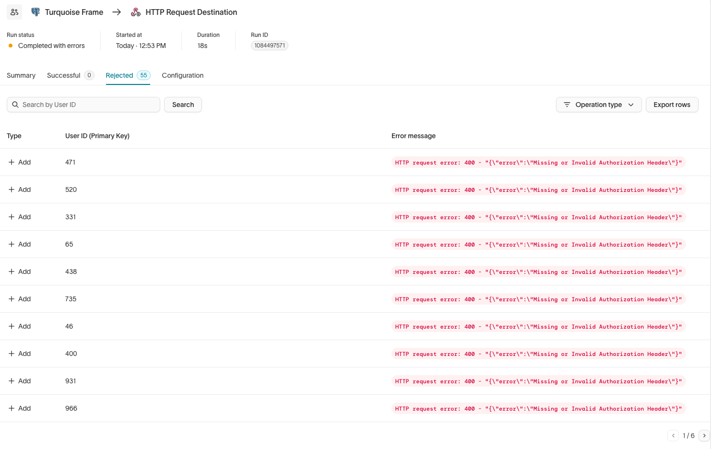
I quickly fixed this and placed the production API key in along with the "Bearer" that was previously missing.
I then hit sync and came across another error: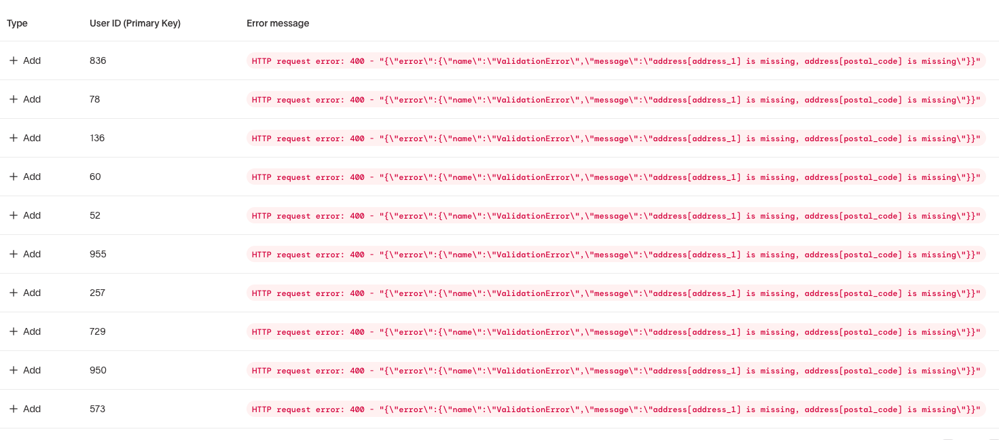
I had the JSON config like this:
{
"identifier": "{{row['User ID']}}",
"email": "{{row['Email']}}",
"address": {
"name": "{{row['Full Name']}}",
"address_1": "",
"city": "",
"state": "",
"postal_code": ""
}
}But Poplar doesn't accept empty fields. So I simplified the JSON to:
{
"identifier": "{{row['User ID']}}",
"email": "{{row['Email']}}"
}This then resulted in a successful sync on my next run.
INSUFFICIENT_ACCESS_OR_READONLY Error
Hi there,
Peter here, one of the Success Engineers at Hightouch. Thank you for reaching out, I'd be happy to assist!
From my understanding of the INSUFFICIENT_ACCESS_OR_READONLY error, are you trying to sync data to your Salesforce destination? If so, this is likely related to your Salesforce credentials.
If you take a look at our documentation here: hightouch.com/docs/destinations/salesforce#common-errors
Under that error code you can see the following:
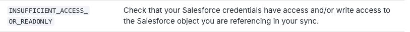
This looks like a permissions issue, it means the Salesforce user account that Hightouch authenticated with doesn't have sufficient access to read or write to the object it's trying to sync. It's also worth quickly checking that the "View Setup and Configuration" permission is enabled on the user's profile in Salesforce under Administrative Permissions.
As a next step, are you able to re-authenticate the Salesforce destination in Hightouch using a Salesforce system administrator account, or an account that has the correct permissions?
If this issue isn't related to your Salesforce destination, please let me know where the error is showing up in your Hightouch workspace and what action you were attempting when it was triggered. Any screenshot would also be a great help!
Once I have that information, I'm happy to dig further into it for you. 😊
Kind regards,
Peter CooperCustomer Success Engineer, Hightouch
Google Sheets Being Overwritten on Every Sync
Hi there,
Peter here, one of the Success Engineers at Hightouch. Thank you for reaching out, I'd be happy to assist!
It looks like what you're experiencing is expected behaviour based on your current sync mode. By default, the Google Sheets destination uses Mirror mode, which replaces the entire sheet's contents with the latest results from your model on every sync run. That's why you're seeing your data get overwritten each time.
The good news is there are two alternative modes you can switch to, depending on what you're trying to achieve:
- Append mode — rows added to your model are appended to the sheet. Rows that are changed or removed in your model are ignored. This is a good option if you want to accumulate data over time without losing previous entries.
- Snapshot mode — instead of overwriting your existing sheet, Hightouch creates a new sheet tab on every sync run with the full results. This is useful if you want to keep a historical record of each sync.
To change the sync mode, go to your sync configuration in Hightouch, edit the Google Sheets sync, and update the mode from Mirror to either Append or Snapshot depending on your needs.
You can find more detail on all three modes in our docs here: hightouch.com/docs/destinations/google-sheets
Let me know if you have any questions or if you'd like a hand figuring out which mode best fits your use case.
Customer Success Engineer, Hightouch
Duplicate Primary Key Error
Hi there,
Peter here, one of the Success Engineers at Hightouch. Thank you for reaching out, I'd be happy to assist!
I understand that you're looking to find out why Hightouch requires users to have a unique primary key and what to do if you don't have a unique field set up in your dataset.
If we take a look at the image below:
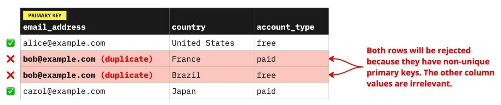
We can see the primary key is set as email address. Hightouch's sync engine relies on unique primary keys to detect when rows are added, changed, or removed in a data model.
From the image we can see that there are two matching/duplicate emails. As a safeguard to prevent duplicate records from reaching your destination, Hightouch will automatically filter out rows with non-unique primary keys.
You can read more about unique primary key requirements here: hightouch.com/docs/models/creating-models#unique-primary-key-requirement
Now, having said that, you mention in your support request that you truly don't have a field that is unique. If your dataset doesn't inherently include any unique columns, you can use SQL to either:
- Filter out duplicate rows — if you're not concerned about losing data from one or more of the duplicated rows. View docs
- Create a composite column to use for your primary key. View docs
Please note that if you alter a model's primary key by selecting a different column, you will be prompted to perform a full sync or reset the change data capture for all syncs that depend on that model. Be careful when modifying primary keys. If you keep the same column name but alter the way its values are calculated, some records may be added or deleted in your destination, depending on how your sync is configured.
If you would like me to assist you with any of the above for your dataset, please let me know.
Customer Success Engineer, Hightouch
Related Model Columns Not Appearing in Sync Config
Hi there,
Peter here from the Hightouch Customer Success team, happy to help!
You're not doing anything wrong. This is actually by design in Customer Studio. When you sync an audience to a destination, only columns from the parent model are available in the sync configuration. Related model and event model columns are used for filtering and building your audience, but they aren't directly surfaced as fields you can map in the sync itself.
There are two ways to get related model data into your sync:
- Option 1 — Use the Merge columns feature. This lets you pull columns from your parent model into a related or event model so they're available for filtering — but more relevantly, you can also merge related model columns onto the parent model. To set this up, go to Customer Studio → Schema → open your related model → Relationships tab → enable Merge columns. Once merged, those fields will appear as read-only columns on the parent model and will be available in your sync configuration.
- Option 2 — Create a Trait. If you want to compute a value from a related model (for example, total spend from a Purchases table) and sync it to a destination, you can create a trait on the parent model that aggregates data from the related model. Traits defined on the parent model are synced just like any other column.
You can find more detail on both approaches in our docs here:
Let me know if you'd like a hand figuring out which approach best fits your use case!
Customer Success Engineer, Hightouch